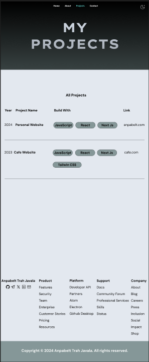

UI design on Figma:
anpabelt.com
This site is designed to showcase my projects, experience,
and provide ways to connect with me. Below are the details of the
sections on the website. This website consists of several features, such
that:
- Home
- About
- Projects
- Contact
- Footer
🧑🏽‍💼 Home
On the Home page, I introduce myself and my passion for creating
user-friendly and visually appealing designs. This section gives you a
glimpse into who I am and what I love to do. You’ll also find a preview
of my featured projects, where I showcase some of my best work.
Design:

Highlights:
- A warm introduction to who I am and what I do.
- Featured projects that reflect my skills and creativity.
- A gateway to explore more about me and my work.
ℹ️ About
On the About page, I share my professional journey, from the roles I’ve
held to the skills I’ve developed over the years. I focus on how I’ve
applied my knowledge to real-world challenges and how those experiences
have shaped me. This is where you’ll learn more about what I bring to the
table.
Design:

Key points:
- A clear timeline of my work experience.
- Descriptions of my roles and responsibilities.
- Insights into how I’ve grown and adapted in my career.
💻 Projects
The Projects section is where I highlight the work I’m most proud of. Each
project represents a unique challenge I’ve tackled, showcasing my
technical skills and creativity. I also include the tools and technologies
I used, giving you a sense of how I approach and execute my ideas.
Design:

What you’ll find:
- A list of projects I’ve worked on, organized by year.
- The technologies I used to bring each project to life.
-
A reflection of my versatility and ability to deliver quality results.
📱 Contact
I want to make it easy for you to connect with me, which is why I’ve
designed the Contact section to be simple and straightforward. Whether you
prefer sending a message through the form or reaching out via social
media, I’m always open to conversations and collaborations.
Design:

Ways to connect:
- A user-friendly contact form for direct communication.
- Links to my social media profiles for additional ways to engage.
-
A welcoming invitation to share ideas, feedback, or opportunities.
🗂️ Footer
The Footer ties everything together with useful links and resources. I’ve
included quick navigation options to ensure you can easily find what
you’re looking for. It’s also where I showcase my brand identity and
provide essential information about my work.
Features:
- A user-friendly contact form for direct communication.
- Links to my social media profiles for additional ways to engage.
-
A welcoming invitation to share ideas, feedback, or opportunities.